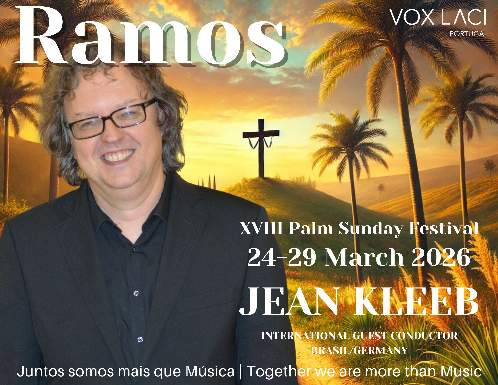

2027
19th edition · Portugal
15–21 March · Felicia Barber, international guest conductor · USA
Since 2005
Ramos brings international conductors, individual singers and choirs to Portugal for intensive rehearsals, masterclasses and sacred-music concerts.
Every year during Palm Sunday week, different ways of listening, feeling and building music transform singers and audiences in Cascais and Lisbon.

International Guest Conductor · USA
Felicia Barber leads the 19th edition. Repertoire, venues and the final concert schedule will be published as they are confirmed.
I want to sing in Ramos 2027Participation
After acceptance and payment of the €295 Ramos fee, singers receive PDF scores and preparation audio. Travel and accommodation are not included.
Archive 2005–2028
2027

2026

2025

2024
Founder and Artistic Director
Founder of VoxLaci and artistic director of Ramos, with choral work and projects developed in Portugal and internationally.
Ramos 2027